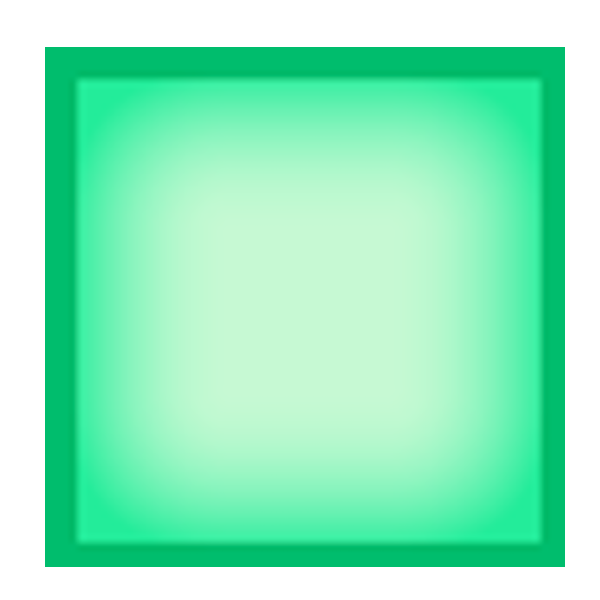

Python projects
Find out about my most significant Python projects.
Most of them are open-source and available on Github.
LibreCastLibreCast is a multi-platform client developed as a school project. It allows users to stream videos, manage playlists and subscriptions, browse online content and more. |
|
|  |
Boxxy
Boxxy, a two-player turn-by-turn based game, where the goal is to complete squares on a 6 by 6 board. One player hosts the server, enabling multiple users to play over the network. |
Notes Maker
Notes Maker is a simple text editor made for students who wish to take notes in class, and then convert them to fully-readable content. |
|